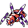

#038
Ariados
BugPoison
Insomnia
SniperPowers up critical hits.
MercilessHidden abilityAlways crits poisoned foes.
Base stats Total 450
HP70
Attack110
Defense70
Speed80
Sp. Atk50
Sp. Def70
Evolution
Evolves from Spinarak — Level 22
Training & breeding
- Catch rate
- 90 / 255
- Base experience
- 140
- Wild held items
- None
- Gender ratio
- 50% male, 50% female
- Egg groups
- Bug
- Hatch time
- 15 egg cycles (~3,840 steps)
- Growth rate
- Fast
Level-up moves
LevelMoveTypeCat.PowerAcc.
TM / HM moves 22
TM / HMMoveTypeCat.PowerAcc.